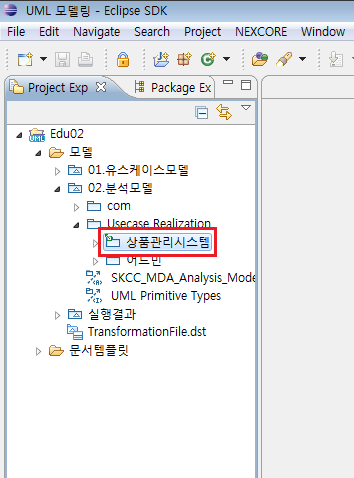
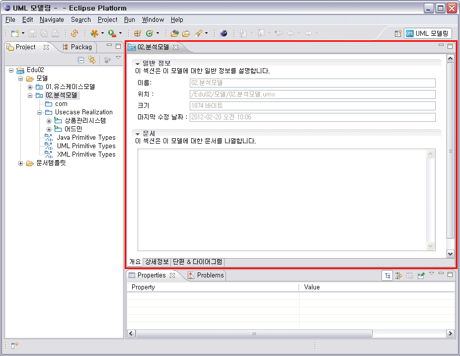
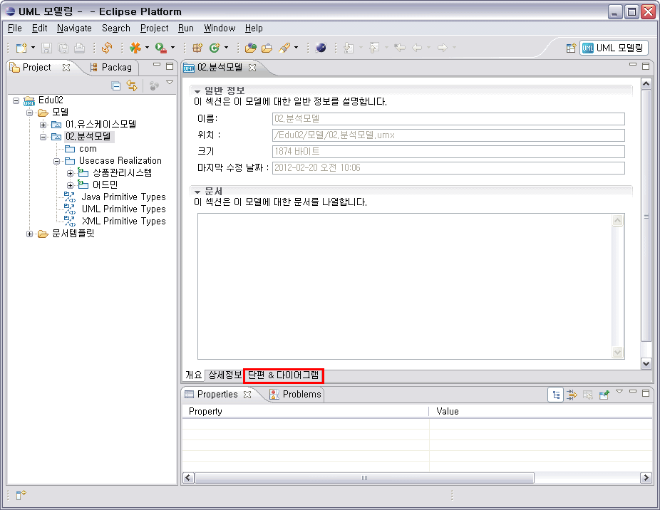

1. 파일 단편화
UML 모델을 작은 단위로 단편화하여 다른 파일로 관리할 수 있는 기능입니다. 이 때, 단편화의 단위는 패키지입니다. 프로젝트 탐색기에서 패키지 요소를 선택했을 경우에만 단편화를 사용할 수 있습니다. 파일 단편화 시, 작업 공간 안의 모든 모델 파일은 자동으로 저장됩니다.
1.1 단편 대상 선택
프로젝트 탐색기에서 [02.분석모델-Usecase Realization-상품관리시스템]을 선택한 후, 마우스 오른쪽 클릭 > [단편화 / 병합] > [파일 단편화]를 선택합니다.

<그림 1. 단편화 실행 메뉴>
1.2 단편화 파일 저장
팝업창에서 단편화된 파일을 저장할 위치를 선택하고, 분리한 결과가 저장될 파일명을 지정한 후 [OK] 버튼을 클릭합니다. 이 때, 분리해서 관리할 파일의 확장자는 umf가 되어야 합니다.

<그림 2. 단편화 파일 저장>
1.3 파일 단편화 완료
파일 단편화가 완료되면, 프로젝트 탐색기에서 패키지 아이콘이 변경되며, 이것을 통해 패키지가 분리되었음을 확인할 수 있습니다. 이미 파일 분리가 이루어진 요소에서는 [파일 단편화] 메뉴가 비활성이 되며, [파일 병합] 메뉴가 활성화 됩니다.

<그림 3. 단편화 완료 후>
2. 파일 병합
[파일 단편화]를 통해서 분리된 파일을 다시 원 모델에 병합하는 기능입니다. 파일 단편화가 이루어진 요소에서만 해당 메뉴가 활성화됩니다. 파일 병합 시, 작업 공간 안의 모든 모델 파일은 자동으로 저장됩니다.
2.1 파일 병합 대상 선택
프로젝트 탐색기에서, 단편화되어 있는 패키지인 [02.분석모델-Usecase Realization-상품관리시스템]을 선택한 후, 마우스 오른쪽 클릭 > [단편화 / 병합] > [파일 병합]을 선택합니다.

<그림 4. 파일 병합 실행 메뉴>
2.2 파일 병합 실행
파일 병합을 할 것인지 확인하는 팝업창이 나타납니다. [OK] 버튼을 클릭하면 파일 병합이 진행됩니다.

<그림 5. 파일 병합>
2.3 파일 병합 완료
파일 병합이 완료되면, 프로젝트 탐색기에서 패키지 아이콘이 변경되며, 이것을 통해 해당 패키지가 원 모델에 병합되었음을 확인할 수 있습니다. 병합이 완료되면 [파일 병합] 메뉴가 비활성이 되며, [파일 단편화] 메뉴가 활성화됩니다. 파일 병합이 완료되면, 분리되었던 파일은 파일 시스템에서 삭제됩니다.

<그림 6. 파일 병합 완료>
3. 단편화된 패키지 목록 확인
모델 내의 단편화된 패키지의 목록을 한 곳에서 확인할 수 있습니다.
3.1 모델 편집기 열기
프로젝트 탐색기에서 해당 모델을 더블 클릭하거나, 해당 모델을 선택한 후 [엔터] 키를 입력하거나, 해당 모델을 선택한 상태에서 마우스 오른쪽 클릭 > [열기]를 클릭하면 모델 편집기가 열립니다.

<그림 7. 모델 편집기>
3.2 단편 & 다이어그램 탭 열기
모델 편집기 하단에 있는 탭 중, [단편 & 다이어그램] 탭을 클릭합니다.

<그림 8. 단편 & 다이어그램 탭 열기>
3.3 단편화된 패키지 목록 확인
[단편 & 다이어그램] 페이지에서 해당 모델에 존재하는 단편화된 패키지의 목록을 확인할 수 있습니다. 여기에는 단편화된 엘리먼트명과 단편화 파일의 경로가 표시됩니다.

<그림 9. 단편화된 패키지 목록 확인>